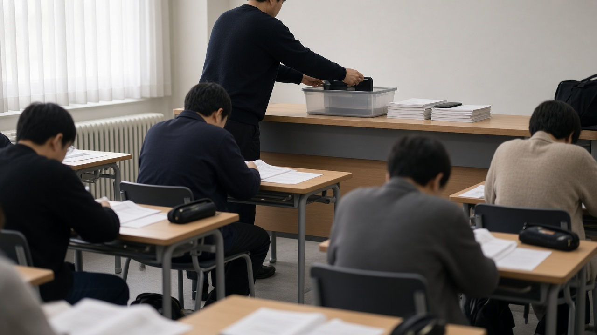
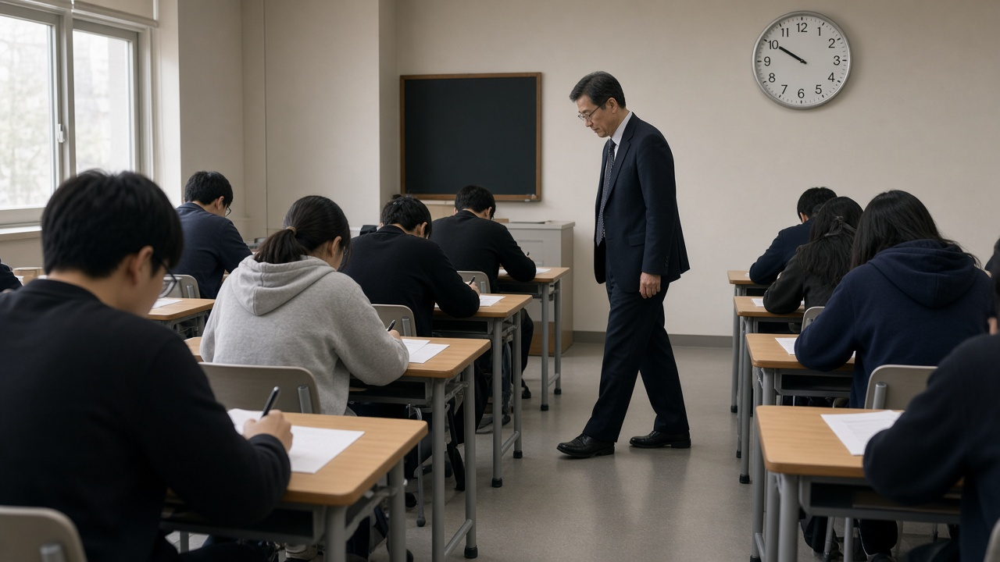
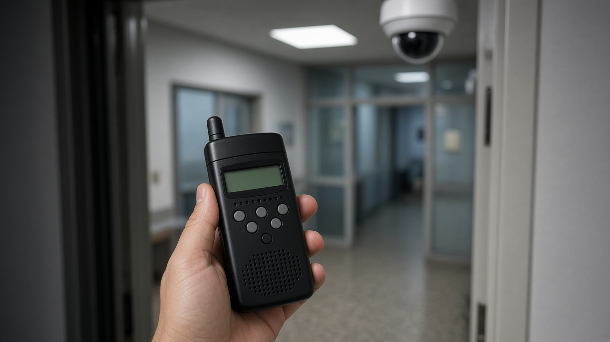

세무사 시험 초소형 카메라 부정행위 뒤, 국가자격시험 응시 제한 3년에서 10년으로 늘리는 방안과 달라지는 감독

기사나 기능사, 세무사 같은 국가자격시험을 준비하는 분들이라면 요즘 시험장 분위기가 어떻게 바뀔지 신경이 쓰이실 거예요.
올해 제63회 세무사 시험에서 초소형 카메라 같은 스마트기기와 인공지능 기술을 악용한 부정행위가 확인되면서 정부가 시험 관리 전반을 다시 손보기로 했거든요.
고용노동부는 11월 19일 국가자격제도 종합점검 및 대책수립 전담반 첫 회의를 열고 시험 전과 시험 중, 시험 뒤까지 감독을 강화하겠다고 밝혔어요.
성실하게 준비하는 수험생 입장에서 무엇이 달라질 수 있는지, 지금부터 꼭 조심할 점은 무엇인지 차례로 정리해 볼게요.
세무사 시험 부정행위가 국가자격시험 전체 점검으로 번졌어요
시작은 올해 세무사 시험이었어요. 인공지능 기술을 악용해 최고점수를 받은 부정행위자가 확인된 거예요.
재정경제부는 11월 16일 세무사 시험 부정행위 대응 전담반을 꾸렸고, 국세청은 이 사람에게 시험 무효와 5년간 세무사 시험 응시자격 정지 처분을 내리기 위한 절차를 시작했어요.
처분은 청문 절차를 거친 뒤 결정되고, 한국산업인력공단은 업무방해 혐의로 형사 고소도 진행하고 있어요.
최근 3년에서 5년 사이 세무사 시험 최종 합격자 성적도 점수 분포를 바탕으로 다시 살펴볼 예정이에요.
그리고 11월 19일에는 고용노동부 차관을 단장으로 한 전담반이 꾸려져 세무사뿐 아니라 감정평가사, 관세사, 변리사 소관 부처와 전파 통신 전문가까지 함께 국가자격 검정 체계 전체를 점검하기로 했어요.

반입 금지 물품은 가지고만 있어도 부정행위가 돼요
수험생에게 가장 직접적인 부분은 시험 시작 전 단계예요.
정부는 스마트폰이나 초소형 카메라를 이용한 부정행위는 응시 제한과 형사 처벌까지 받을 수 있다는 점을 분명히 알리겠다고 했어요.
특히 반입 금지 물품을 몸에 지니고 있는 것만으로도, 또 반입이 허용된 물건이라도 부정행위 목적으로 고친 경우라면 적발 즉시 부정행위로 처리된다는 점을 강조했어요.
휴대전화 같은 전자기기는 감독관이 전원이 꺼졌는지 직접 확인하고 한꺼번에 거둬 시험이 끝날 때까지 관리하게 돼요.
시험 시작 전에 응시생에게 무작위로 전화를 걸어 휴대전화 전원이 정말 꺼졌는지 다시 확인하는 방안도 들어 있어요.
그러니 시험 당일에는 휴대전화를 미리 끄고, 스마트시계나 무선 이어폰처럼 무심코 차고 있던 기기도 한 번 더 확인하는 습관이 필요해요.
시험 중에는 감독 인력과 전파탐지기가 늘어나요
시험 시간 동안의 감독도 촘촘해져요.
정부는 10월 25일부터 투입한 전문 감독 인력을 크게 늘리고, 휴대전화나 초소형 기기 사용이 의심되는 이상행동을 집중해서 살피겠다고 했어요.
한국방송통신전파진흥원이 개발하고 있는 전파탐지기는 개발이 끝나는 대로 모든 시험장에 도입할 계획이에요.
감독 인력은 한 번 쓰고 마는 아르바이트가 아니라 꾸준히 교육받는 전문 인력으로 키우고, 적극적으로 적발한 감독관에게 책임을 덜어 주거나 보상을 주는 방안도 검토하고 있어요.
평소처럼 시험을 보는 수험생이라면 크게 걱정할 일은 없지만, 시험 중 괜히 의심받을 행동은 피하는 게 좋아요.

응시 제한을 3년에서 10년으로 늘리는 방안이 추진돼요
시험이 끝난 뒤의 관리와 처벌도 무거워질 전망이에요.
지금 한국산업인력공단 자체 시험장에 설치된 폐쇄회로 카메라를 빌려 쓰는 시험장까지 넓히고, 부정행위 제보센터를 상시로 운영해 이미 저질러진 부정행위도 찾아내겠다고 했어요.
가장 눈에 띄는 건 국가기술자격 부정행위자의 응시 제한 기간을 지금의 3년에서 10년으로 늘리는 방안이에요.
세무사 같은 국가전문자격도 관계부처와 협의해 응시 제한 기간을 늘리고 형사처벌 근거를 마련하겠다고 밝혔어요.
다만 이 부분은 11월 19일 기준으로 아직 추진 계획 단계라서, 실제 적용 시점과 내용은 법령이 바뀐 뒤에 확정돼요.
합격자 발표 방식과 앞으로 확인할 점
합격자를 정하는 과정도 달라질 수 있어요.
합격자 발표 전에 시험 자료를 분석해 예년과 다른 특이한 점수 흐름이 있는지 보고, 답안지를 다시 검수한 뒤 합격자를 확정하는 방식이 제시됐어요.
수석과 차석 합격자 점수 공개를 의무로 하고, 전체 평균 점수나 과목별 점수 분포를 공개하는 방안도 검토하고 있어요.
세무사 시험에는 이런 감독 강화 대책이 내년 시험부터 바로 적용될 예정이에요.
큐넷 일정표를 보면 11월 21일 경비지도사 시험처럼 이달에도 시험이 이어지니, 응시 예정이라면 수험자 유의사항과 반입 금지 물품 안내를 큐넷 공지에서 먼저 확인해 두세요.
참고 자료 고용노동부 2026년 11월 19일 보도자료 국가자격제도 종합점검 및 대책수립 TF 1차 회의 개최, 재정경제부 국세청 한국산업인력공단 2026년 11월 16일 보도자료 세무사 시험 부정행위 대응 TF 킥오프 회의, 한국산업인력공단 큐넷 2026년 11월 시험일정 안내, 대한경제 2026년 11월 19일 기사
태그 국가자격시험 세무사시험 부정행위 응시제한 큐넷 한국산업인력공단 국가기술자격 시험감독 스마트기기 자격증